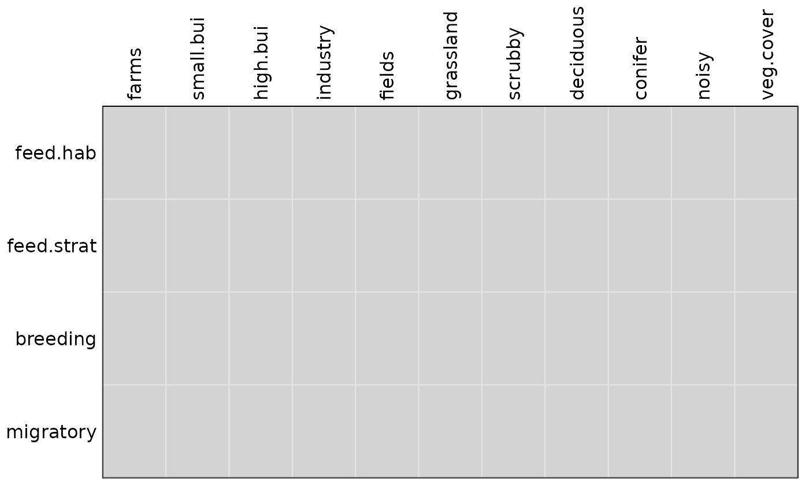

Functions to compute the fourth-corner statistic
fourthcorner.RdThese functions allow to compute the fourth-corner statistic for abundance or presence-absence data. The fourth-corner statistic has been developed by Legendre et al (1997) and extended in Dray and Legendre (2008). The statistic measures the link between three tables: a table L (n x p) containing the abundances of p species at n sites, a second table R (n x m) containing the measurements of m environmental variables for the n sites, and a third table Q (p x s) describing s species traits for the p species.
Usage
fourthcorner(tabR, tabL, tabQ, modeltype = 6, nrepet = 999, tr01 = FALSE,
p.adjust.method.G = p.adjust.methods, p.adjust.method.D = p.adjust.methods,
p.adjust.D = c("global", "levels"), ...)
fourthcorner2(tabR, tabL, tabQ, modeltype = 6, nrepet = 999, tr01 = FALSE,
p.adjust.method.G = p.adjust.methods, ...)
# S3 method for 4thcorner
print(x, varQ = 1:length(x$varnames.Q),
varR = 1:length(x$varnames.R), stat = c("D", "D2"), ...)
# S3 method for 4thcorner
summary(object,...)
# S3 method for 4thcorner
plot(x, stat = c("D", "D2", "G"), type = c("table", "biplot"),
xax = 1, yax = 2, x.rlq = NULL, alpha = 0.05,
col = c("lightgrey", "red", "deepskyblue", "purple"), ...)
fourthcorner.rlq(xtest, nrepet = 999, modeltype = 6,
typetest = c("axes", "Q.axes", "R.axes"), p.adjust.method.G = p.adjust.methods,
p.adjust.method.D = p.adjust.methods, p.adjust.D = c("global", "levels"), ...)Arguments
- tabR
a dataframe containing the measurements (numeric values or factors) of m environmental variables (columns) for the n sites (rows).
- tabL
a dataframe containing the abundances of p species (columns) at n sites (rows).
- tabQ
a dataframe containing numeric values or factors describing s species traits (columns) for the p species (rows).
- modeltype
an integer (1-6) indicating the permutation model used in the testing procedure (see details).
- nrepet
the number of permutations
- tr01
a logical indicating if data in
tabLmust be transformed to presence-absence data (FALSE by default)- object
an object of the class 4thcorner
- x
an object of the class 4thcorner
- varR
a vector containing indices for variables in
tabR- varQ
a vector containing indices for variables in
tabQ- type
results are represented by a table or on a biplot (see x.rlq)
- alpha
a value of significance level
- p.adjust.method.G
a string indicating a method for multiple adjustment used for output tabG, see
p.adjust.methodsfor possible choices- p.adjust.method.D
a string indicating a method for multiple adjustment used for output tabD/tabD2, see
p.adjust.methodsfor possible choices- p.adjust.D
a string indicating if multiple adjustment for tabD/tabD2 should be done globally or only between levels of a factor ("levels", as in the original paper of Legendre et al. 1997)
- stat
a character to specify if results should be plotted for cells (D and D2) or variables (G)
- xax
an integer indicating which rlq axis should be plotted on the x-axis
- yax
an integer indicating which rlq axis should be plotted on the y-axis
- x.rlq
an object created by the
rlqfunction. Used to represent results on a biplot (type should be "biplot" and object created by thefourthcornerfunctions)- col
a vector of length 4 containing four colors used for the graphical representations. The first is used to represent non-significant associations, the second positive significant, the third negative significant. For the 'biplot' method and objects created by the
fourthcorner.rlqfunction, the second corresponds to variables significantly linked to the x-axis, the third for the y-axis and the fourth for both axes- xtest
an object created by the
rlqfunction- typetest
a string indicating which tests should be performed
- ...
further arguments passed to or from other methods
Details
For the fourthcorner function, the link is measured by a Pearson correlation coefficient for two quantitative variables (trait and environmental variable), by a Pearson Chi2 and G statistic for two qualitative variables and by a Pseudo-F and Pearson r for one quantitative variable and one qualitative variable. The fourthcorner2 function offers a multivariate statistic (equal to the sum of eigenvalues of RLQ analysis) and measures the link between two variables by a square correlation coefficient (quant/quant), a Chi2/sum(L) (qual/qual) and a correlation ratio (quant/qual). The significance is tested by a permutation procedure. Different models are available:
model 1 (
modeltype=1): Permute values for each species independently (i.e., permute within each column of table L)model 2 (
modeltype=2): Permute values of sites (i.e., permute entire rows of table L)model 3 (
modeltype=3): Permute values for each site independently (i.e., permute within each row of table L)model 4 (
modeltype=4): Permute values of species (i.e., permute entire columns of table L)model 5 (
modeltype=5): Permute values of species and after (or before) permute values of sites (i.e., permute entire columns and after (or before) entire rows of table L)model 6 (
modeltype=6): combination of the outputs of models 2 and 4. Dray and Legendre (2008) and ter Braak et al. (20012) showed that all models (except model 6) have inflated type I error.
Note that the model 5 is strictly equivalent to permuting simultaneously the rows of tables R and Q, as proposed by Doledec et al. (1996).
The function summary returns results for variables (G). The
function print returns results for cells (D and D2). In the case
of qualitative variables, Holm's corrected pvalues are also provided.
The function plot produces a graphical representation of the
results (white for non significant, light grey for negative significant
and dark grey for positive significant relationships). Results can be
plotted for variables (G) or for cells (D and D2). In the case of
qualitative / quantitative association, homogeneity (D) or correlation
(D2) are plotted.
Value
The fourthcorner function returns a a list where:
tabDis akrandtestobject giving the results of tests for cells of the fourth-corner (homogeneity for quant./qual.).tabD2is akrandtestobject giving the results of tests for cells of the fourth-corner (Pearson r for quant./qual.).tabGis akrandtestobject giving the results of tests for variables (Pearson's Chi2 for qual./qual.).
The fourthcorner2 function returns a list where:
tabGis akrandtestobject giving the results of tests for variables.trRLQis akrandtestobject giving the results of tests for the multivariate statistic (i.e. equivalent torandtest.rlqfunction).
References
Doledec, S., Chessel, D., ter Braak, C.J.F. and Champely, S. (1996) Matching species traits to environmental variables: a new three-table ordination method. Environmental and Ecological Statistics, 3, 143--166.
Legendre, P., R. Galzin, and M. L. Harmelin-Vivien. (1997) Relating behavior to habitat: solutions to the fourth-corner problem. Ecology, 78, 547--562.
Dray, S. and Legendre, P. (2008) Testing the species traits-environment relationships: the fourth-corner problem revisited. Ecology, 89, 3400--3412.
ter Braak, C., Cormont, A., and Dray, S. (2012) Improved testing of species traits-environment relationships in the fourth corner problem. Ecology, 93, 1525--1526.
Dray, S., Choler, P., Doledec, S., Peres-Neto, P.R., Thuiller, W., Pavoine, S. and ter Braak, C.J.F (2014) Combining the fourth-corner and the RLQ methods for assessing trait responses to environmental variation. Ecology, 95, 14--21. doi:10.1890/13-0196.1
Author
Stéphane Dray stephane.dray@univ-lyon1.fr
Examples
data(aviurba)
## Version using the sequential test (ter Braak et al 2012)
## as recommended in Dray et al (2013),
## using Holm correction of P-values (only 99 permutations here)
four.comb.default <- fourthcorner(aviurba$mil,aviurba$fau,aviurba$traits,nrepet=99)
summary(four.comb.default)
#> Fourth-corner Statistics
#> ------------------------
#> Permutation method Comb. 2 and 4 ( 99 permutations)
#>
#> Adjustment method for multiple comparisons: holm
#> Test Stat Obs Std.Obs Alter Pvalue
#> 1 farms / feed.hab Chi2 4.36429268 1.52838080 greater 0.09
#> 2 small.bui / feed.hab Chi2 5.57481613 2.80714632 greater 0.03
#> 3 high.bui / feed.hab Chi2 3.11706174 0.53605619 greater 0.20
#> 4 industry / feed.hab Chi2 2.05615534 0.26550753 greater 0.32
#> 5 fields / feed.hab Chi2 14.01139382 0.13792501 greater 0.29
#> 6 grassland / feed.hab Chi2 1.27966991 -0.29194495 greater 0.50
#> 7 scrubby / feed.hab Chi2 2.87647118 0.89183865 greater 0.19
#> 8 deciduous / feed.hab Chi2 2.56301663 0.73072185 greater 0.16
#> 9 conifer / feed.hab Chi2 0.67773900 -0.58281443 greater 0.63
#> 10 noisy / feed.hab Chi2 8.04038367 -0.08651467 greater 0.50
#> 11 veg.cover / feed.hab Chi2 29.48926101 -0.17086002 greater 0.47
#> 12 farms / feed.strat Chi2 4.29284964 0.24784194 greater 0.27
#> 13 small.bui / feed.strat Chi2 13.59643807 2.47249342 greater 0.05
#> 14 high.bui / feed.strat Chi2 8.13102044 1.31760821 greater 0.13
#> 15 industry / feed.strat Chi2 1.60089833 -0.46868251 greater 0.56
#> 16 fields / feed.strat Chi2 7.89491358 1.72863960 greater 0.10
#> 17 grassland / feed.strat Chi2 2.11779967 -0.41629279 greater 0.61
#> 18 scrubby / feed.strat Chi2 5.17033389 0.69379004 greater 0.18
#> 19 deciduous / feed.strat Chi2 4.27795300 0.43826638 greater 0.22
#> 20 conifer / feed.strat Chi2 3.27694136 0.03892896 greater 0.43
#> 21 noisy / feed.strat Chi2 6.75501319 0.93245008 greater 0.10
#> 22 veg.cover / feed.strat Chi2 78.31693213 2.82022680 greater 0.02
#> 23 farms / breeding Chi2 3.23430156 -0.62633547 greater 0.70
#> 24 small.bui / breeding Chi2 27.79316236 1.92031040 greater 0.05
#> 25 high.bui / breeding Chi2 12.43543038 1.17213916 greater 0.12
#> 26 industry / breeding Chi2 22.28586480 3.37459868 greater 0.01
#> 27 fields / breeding Chi2 38.33899311 1.72052206 greater 0.06
#> 28 grassland / breeding Chi2 16.69969331 2.08660042 greater 0.06
#> 29 scrubby / breeding Chi2 7.93877813 0.56035545 greater 0.24
#> 30 deciduous / breeding Chi2 36.37422465 6.12742128 greater 0.01
#> 31 conifer / breeding Chi2 8.13155633 0.26640283 greater 0.26
#> 32 noisy / breeding Chi2 22.81746753 1.46939904 greater 0.09
#> 33 veg.cover / breeding Chi2 118.24035270 5.18176888 greater 0.01
#> 34 farms / migratory Chi2 3.19878341 1.48772309 greater 0.10
#> 35 small.bui / migratory Chi2 0.98799705 -0.01343033 greater 0.34
#> 36 high.bui / migratory Chi2 0.62908910 -0.39470632 greater 0.53
#> 37 industry / migratory Chi2 0.98753393 0.08871358 greater 0.27
#> 38 fields / migratory Chi2 5.39284445 2.65638761 greater 0.04
#> 39 grassland / migratory Chi2 0.09775421 -0.66729263 greater 0.82
#> 40 scrubby / migratory Chi2 3.40196612 1.82995271 greater 0.08
#> 41 deciduous / migratory Chi2 0.00146756 -0.86047598 greater 0.96
#> 42 conifer / migratory Chi2 0.18177435 -0.55171231 greater 0.68
#> 43 noisy / migratory Chi2 0.99220442 -0.08235120 greater 0.37
#> 44 veg.cover / migratory Chi2 9.14414536 0.75615065 greater 0.22
#> Pvalue.adj
#> 1 1.00
#> 2 1.00
#> 3 1.00
#> 4 1.00
#> 5 1.00
#> 6 1.00
#> 7 1.00
#> 8 1.00
#> 9 1.00
#> 10 1.00
#> 11 1.00
#> 12 1.00
#> 13 1.00
#> 14 1.00
#> 15 1.00
#> 16 1.00
#> 17 1.00
#> 18 1.00
#> 19 1.00
#> 20 1.00
#> 21 1.00
#> 22 0.80
#> 23 1.00
#> 24 1.00
#> 25 1.00
#> 26 0.44
#> 27 1.00
#> 28 1.00
#> 29 1.00
#> 30 0.44
#> 31 1.00
#> 32 1.00
#> 33 0.44
#> 34 1.00
#> 35 1.00
#> 36 1.00
#> 37 1.00
#> 38 1.00
#> 39 1.00
#> 40 1.00
#> 41 1.00
#> 42 1.00
#> 43 1.00
#> 44 1.00
#>
#> ---
#> Signif. codes: 0 ‘***’ 0.001 ‘**’ 0.01 ‘*’ 0.05 ‘.’ 0.1 ‘ ’ 1
plot(four.comb.default, stat = "G")
## using fdr correction of P-values
four.comb.fdr <- fourthcorner(aviurba$mil, aviurba$fau, aviurba$traits,
nrepet = 99, p.adjust.method.G = 'fdr', p.adjust.method.D = 'fdr')
summary(four.comb.fdr)
#> Fourth-corner Statistics
#> ------------------------
#> Permutation method Comb. 2 and 4 ( 99 permutations)
#>
#> Adjustment method for multiple comparisons: fdr
#> Test Stat Obs Std.Obs Alter Pvalue
#> 1 farms / feed.hab Chi2 4.36429268 -0.03502533 greater 0.49
#> 2 small.bui / feed.hab Chi2 5.57481613 -0.36741413 greater 0.50
#> 3 high.bui / feed.hab Chi2 3.11706174 -0.59946472 greater 0.65
#> 4 industry / feed.hab Chi2 2.05615534 -0.28473361 greater 0.58
#> 5 fields / feed.hab Chi2 14.01139382 0.16014231 greater 0.36
#> 6 grassland / feed.hab Chi2 1.27966991 -0.64507710 greater 0.71
#> 7 scrubby / feed.hab Chi2 2.87647118 0.21551303 greater 0.33
#> 8 deciduous / feed.hab Chi2 2.56301663 -0.50426411 greater 0.60
#> 9 conifer / feed.hab Chi2 0.67773900 -0.75337052 greater 0.72
#> 10 noisy / feed.hab Chi2 8.04038367 -0.14461200 greater 0.47
#> 11 veg.cover / feed.hab Chi2 29.48926101 -0.17418501 greater 0.46
#> 12 farms / feed.strat Chi2 4.29284964 0.10566200 greater 0.33
#> 13 small.bui / feed.strat Chi2 13.59643807 1.06078043 greater 0.13
#> 14 high.bui / feed.strat Chi2 8.13102044 0.56996866 greater 0.23
#> 15 industry / feed.strat Chi2 1.60089833 -0.37479737 greater 0.50
#> 16 fields / feed.strat Chi2 7.89491358 -0.28558455 greater 0.52
#> 17 grassland / feed.strat Chi2 2.11779967 -0.34007089 greater 0.55
#> 18 scrubby / feed.strat Chi2 5.17033389 1.13042726 greater 0.13
#> 19 deciduous / feed.strat Chi2 4.27795300 0.04307042 greater 0.39
#> 20 conifer / feed.strat Chi2 3.27694136 0.96698020 greater 0.17
#> 21 noisy / feed.strat Chi2 6.75501319 -0.12901736 greater 0.42
#> 22 veg.cover / feed.strat Chi2 78.31693213 2.86122097 greater 0.03
#> 23 farms / breeding Chi2 3.23430156 -0.71206407 greater 0.73
#> 24 small.bui / breeding Chi2 27.79316236 1.87894117 greater 0.07
#> 25 high.bui / breeding Chi2 12.43543038 0.78400626 greater 0.18
#> 26 industry / breeding Chi2 22.28586480 8.04889074 greater 0.01
#> 27 fields / breeding Chi2 38.33899311 1.70393277 greater 0.06
#> 28 grassland / breeding Chi2 16.69969331 1.73299795 greater 0.07
#> 29 scrubby / breeding Chi2 7.93877813 0.75496097 greater 0.20
#> 30 deciduous / breeding Chi2 36.37422465 5.80001493 greater 0.01
#> 31 conifer / breeding Chi2 8.13155633 0.40045099 greater 0.25
#> 32 noisy / breeding Chi2 22.81746753 1.15450446 greater 0.13
#> 33 veg.cover / breeding Chi2 118.24035270 3.75161448 greater 0.01
#> 34 farms / migratory Chi2 3.19878341 0.60571837 greater 0.15
#> 35 small.bui / migratory Chi2 0.98799705 -0.55370868 greater 0.55
#> 36 high.bui / migratory Chi2 0.62908910 -0.59095054 greater 0.67
#> 37 industry / migratory Chi2 0.98753393 0.15237249 greater 0.35
#> 38 fields / migratory Chi2 5.39284445 0.21151354 greater 0.33
#> 39 grassland / migratory Chi2 0.09775421 -0.68641492 greater 0.87
#> 40 scrubby / migratory Chi2 3.40196612 2.06708360 greater 0.06
#> 41 deciduous / migratory Chi2 0.00146756 -0.79713008 greater 0.99
#> 42 conifer / migratory Chi2 0.18177435 -0.69618537 greater 0.69
#> 43 noisy / migratory Chi2 0.99220442 -0.50672599 greater 0.61
#> 44 veg.cover / migratory Chi2 9.14414536 -0.46658078 greater 0.63
#> Pvalue.adj
#> 1 0.75625
#> 2 0.75625
#> 3 0.76476
#> 4 0.76476
#> 5 0.72000
#> 6 0.76476
#> 7 0.72000
#> 8 0.76476
#> 9 0.76476
#> 10 0.75625
#> 11 0.75625
#> 12 0.72000
#> 13 0.44000
#> 14 0.59529
#> 15 0.75625
#> 16 0.75625
#> 17 0.75625
#> 18 0.44000
#> 19 0.74609
#> 20 0.49500
#> 21 0.75625
#> 22 0.22000
#> 23 0.76476
#> 24 0.30800
#> 25 0.49500
#> 26 0.14667
#> 27 0.30800
#> 28 0.20533
#> 29 0.33846
#> 30 0.14667
#> 31 0.36667
#> 32 0.44000
#> 33 0.14667
#> 34 0.47143
#> 35 0.75625
#> 36 0.76476
#> 37 0.72000
#> 38 0.72000
#> 39 0.89023
#> 40 0.30800
#> 41 0.99000
#> 42 0.76476
#> 43 0.76476
#> 44 0.76476
#>
#> ---
#> Signif. codes: 0 ‘***’ 0.001 ‘**’ 0.01 ‘*’ 0.05 ‘.’ 0.1 ‘ ’ 1
plot(four.comb.fdr, stat = "G")

## Explicit procedure to combine the results of two models
## proposed in Dray and Legendre (2008);the above does this implicitly
four2 <- fourthcorner(aviurba$mil,aviurba$fau,aviurba$traits,nrepet=99,modeltype=2)
four4 <- fourthcorner(aviurba$mil,aviurba$fau,aviurba$traits,nrepet=99,modeltype=4)
four.comb <- combine.4thcorner(four2, four4)
summary(four.comb)
#> Fourth-corner Statistics
#> ------------------------
#> Permutation method Comb. 2 and 4 ( 99 permutations)
#>
#> Adjustment method for multiple comparisons: holm
#> Test Stat Obs Std.Obs Alter Pvalue
#> 1 farms / feed.hab Chi2 4.36429268 1.95025017 greater 0.04
#> 2 small.bui / feed.hab Chi2 5.57481613 1.97793484 greater 0.07
#> 3 high.bui / feed.hab Chi2 3.11706174 1.33865284 greater 0.12
#> 4 industry / feed.hab Chi2 2.05615534 0.15526065 greater 0.38
#> 5 fields / feed.hab Chi2 14.01139382 0.20630367 greater 0.29
#> 6 grassland / feed.hab Chi2 1.27966991 -0.07742083 greater 0.43
#> 7 scrubby / feed.hab Chi2 2.87647118 0.60259446 greater 0.22
#> 8 deciduous / feed.hab Chi2 2.56301663 0.28059889 greater 0.27
#> 9 conifer / feed.hab Chi2 0.67773900 -0.58166134 greater 0.63
#> 10 noisy / feed.hab Chi2 8.04038367 -0.01969884 greater 0.48
#> 11 veg.cover / feed.hab Chi2 29.48926101 -0.24418673 greater 0.52
#> 12 farms / feed.strat Chi2 4.29284964 0.27209746 greater 0.28
#> 13 small.bui / feed.strat Chi2 13.59643807 0.39837351 greater 0.30
#> 14 high.bui / feed.strat Chi2 8.13102044 2.57354559 greater 0.06
#> 15 industry / feed.strat Chi2 1.60089833 -0.51675117 greater 0.62
#> 16 fields / feed.strat Chi2 7.89491358 1.33461849 greater 0.09
#> 17 grassland / feed.strat Chi2 2.11779967 -0.22467806 greater 0.38
#> 18 scrubby / feed.strat Chi2 5.17033389 0.59907918 greater 0.18
#> 19 deciduous / feed.strat Chi2 4.27795300 0.20083439 greater 0.29
#> 20 conifer / feed.strat Chi2 3.27694136 -0.06869593 greater 0.42
#> 21 noisy / feed.strat Chi2 6.75501319 1.84559376 greater 0.07
#> 22 veg.cover / feed.strat Chi2 78.31693213 2.24833746 greater 0.04
#> 23 farms / breeding Chi2 3.23430156 -0.46771393 greater 0.63
#> 24 small.bui / breeding Chi2 27.79316236 1.68189157 greater 0.07
#> 25 high.bui / breeding Chi2 12.43543038 1.18112737 greater 0.12
#> 26 industry / breeding Chi2 22.28586480 2.94679810 greater 0.04
#> 27 fields / breeding Chi2 38.33899311 1.53283947 greater 0.10
#> 28 grassland / breeding Chi2 16.69969331 2.02821465 greater 0.06
#> 29 scrubby / breeding Chi2 7.93877813 0.35543863 greater 0.29
#> 30 deciduous / breeding Chi2 36.37422465 5.94943075 greater 0.01
#> 31 conifer / breeding Chi2 8.13155633 0.26133237 greater 0.32
#> 32 noisy / breeding Chi2 22.81746753 1.55922863 greater 0.09
#> 33 veg.cover / breeding Chi2 118.24035270 5.90077626 greater 0.01
#> 34 farms / migratory Chi2 3.19878341 1.99147606 greater 0.06
#> 35 small.bui / migratory Chi2 0.98799705 -0.07673561 greater 0.37
#> 36 high.bui / migratory Chi2 0.62908910 -0.15384515 greater 0.40
#> 37 industry / migratory Chi2 0.98753393 -0.11799568 greater 0.41
#> 38 fields / migratory Chi2 5.39284445 -0.13891774 greater 0.37
#> 39 grassland / migratory Chi2 0.09775421 -0.62163903 greater 0.78
#> 40 scrubby / migratory Chi2 3.40196612 1.58629340 greater 0.06
#> 41 deciduous / migratory Chi2 0.00146756 -0.72906057 greater 0.95
#> 42 conifer / migratory Chi2 0.18177435 -0.63335099 greater 0.67
#> 43 noisy / migratory Chi2 0.99220442 0.08683371 greater 0.29
#> 44 veg.cover / migratory Chi2 9.14414536 0.97288492 greater 0.18
#> Pvalue.adj
#> 1 1.00
#> 2 1.00
#> 3 1.00
#> 4 1.00
#> 5 1.00
#> 6 1.00
#> 7 1.00
#> 8 1.00
#> 9 1.00
#> 10 1.00
#> 11 1.00
#> 12 1.00
#> 13 1.00
#> 14 1.00
#> 15 1.00
#> 16 1.00
#> 17 1.00
#> 18 1.00
#> 19 1.00
#> 20 1.00
#> 21 1.00
#> 22 1.00
#> 23 1.00
#> 24 1.00
#> 25 1.00
#> 26 1.00
#> 27 1.00
#> 28 1.00
#> 29 1.00
#> 30 0.44
#> 31 1.00
#> 32 1.00
#> 33 0.44
#> 34 1.00
#> 35 1.00
#> 36 1.00
#> 37 1.00
#> 38 1.00
#> 39 1.00
#> 40 1.00
#> 41 1.00
#> 42 1.00
#> 43 1.00
#> 44 1.00
#>
#> ---
#> Signif. codes: 0 ‘***’ 0.001 ‘**’ 0.01 ‘*’ 0.05 ‘.’ 0.1 ‘ ’ 1
plot(four.comb, stat = "G")